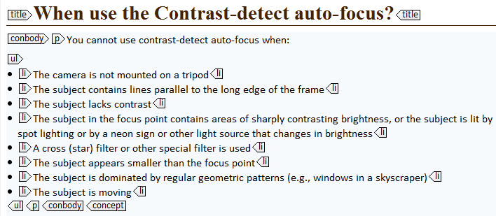
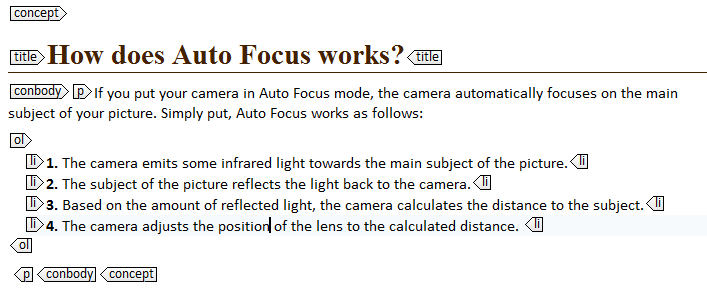
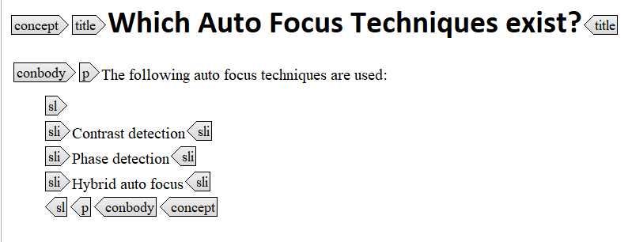

Lists make your concept topics easy to scan. You can use ordered (<ol>), unordered (<ul>) or simple (<sl>) lists. Each list consists of list items (<li>) or simple list items (<sli>).
Tip: Mind Miller's law when creating lists. Limit your list to seven items or fewer when the items are long, and nine items or fewer when the items are short.
<ul>
If the order of the items in your list is not significant, put them in an unordered list. Unordered list are normally rendered as bulleted lists in the output.

<ol>
If the order of the items in your list is significant, put them in an ordered list. Ordered lists are normally rendered as numbered items in the output. For example, you can use numbered items to describe a process (not a task!) or to show the order of importance of the items.

<sl>
The <sl> element contains a simple list of items of short, phrase-like content, such as a list of materials in a kit or package.
